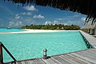
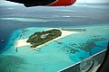
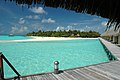
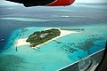

تعرف على جزر المالديف
أين تقع جزر المالديف
تقع المالديف جنوب شبه القارة الهندية، و جنوب غرب سيريلانكا، وتتميّز بكونها واحدة من أصغر الدول في آسيا، والمحيط الهادئ من حيث المساحة الجغرافية، وعاصمتها ماليه، ويقطنها ثلث السكان، إذ بلغ عدد سكان دولة جزر المالديف في عام 2019، 530.953 نسمة، يتوزّعون على نحو 188 جزيرة
خريطة المالديف
المساحة
تمتد سلسلة من ست وعشرين جزيرة من الجزر المرجانية بدءًا من جزيرة ايهافنداهيبولو في الشمال إلى مدينة أدو في الجنوب، تتألف من مساحة تبلغ 298 كيلو متر مربع تقريبًا (115 ميل مربع)، وكان يسميها العرب قديمًا ذيبة المَهَل أو محلديب ويُرجح أنه قد حُرِفَ وأصبح ينطق مالديف
صور جزر المالديف
صور جزر المالديف صور أكثر من رائعة
 



برنامج سياحة للمالديف
| اليوم الاول | اليوم الثاني | اليوم الثالث | اليوم الرابع | اليوم الخامس | اليوم السادس | اليوم السابع |
|---|---|---|---|---|---|---|
| المتحف الوطني في جزر المالديف | مسجد الجمعة الكبير | جزيرة أدو المرجانية | جزيرة ايسدهو | جزيرة ماليه | منتجع جزيرة هيلنجيلي | منتجع والدروف أستوريا |